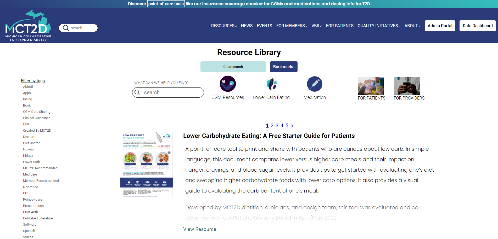
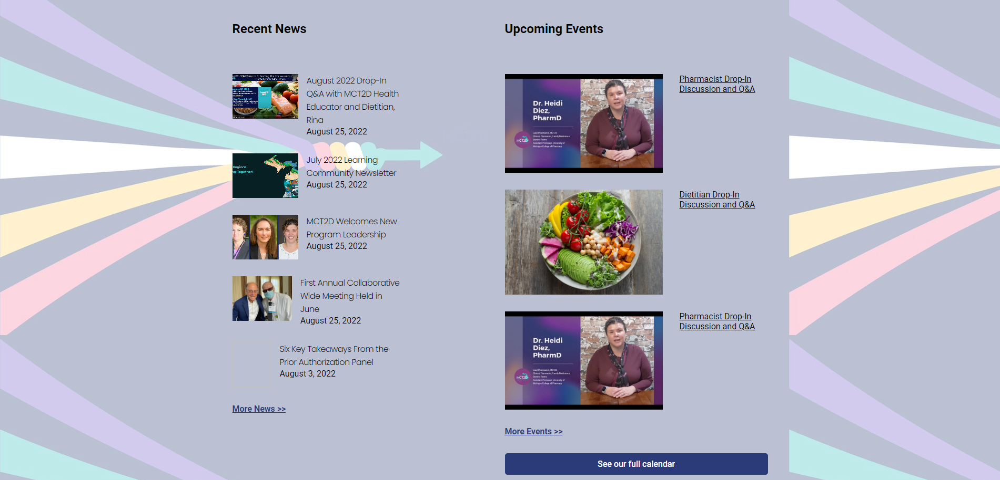

Note: The rebuilt site is currently hosted under the Netlify domain. The site will soon be moved to mct2d.org, but right now that is still the old SquareSpace site. The target date to transfer the domain to the new site is September 8.
The challenge
The website for Michigan Collaborative for Type 2 Diabetes (MCT2D), which was originally built and hosted on SquareSpace, was riddled with visual bugs, had poor mobile responsiveness, had poor search functionality, and was unable to support the growing needs of custom features desired by the collaborative. The goal of this project was to clean up the layout, improve mobile responsiveness, improve page load times, and support additional functionality that would be difficult to achieve on SquareSpace.
The process
Using Contentful, a headless CMS platform, I migrated all existing content, including posts and hosted assets, from SquareSpace to Contentful. I used Next.JS, a popular React framework, to consume the Contentful API and build the website with scalability and performance in mind. Then, I added additional usability features, such as the ability to save bookmarks locally on a device. The project timeline included an approximately 3-month planning phase followed by a 3-month development phase.
The goal
A lightning fast, mobile responsive, and scalable website that allows users to find and share the content they are looking for quickly and easily.
My development process
This project has two major components which were handled simultaneously and iteratively:
- The CMS (Contentful)
- The backend code (Next.JS)
Each component will be presented as if they were developed separately, but the truth is that each incremental addition to either the content models in Contentful or the content parsing functions in Next.JS informed the next steps within the other.
Selecting the Tech Stack
Even though MCT2D already had a complete and functional website, they were dissatisfied with several aspects of the site, including layout glitches, mobile responsiveness, search functionality, and scalability. They knew they wanted to migrate the website to a different platform that would better suit their growing needs. However, because the existing site was already quite large and well established, the decision could not be taken lightly. As a team, we considered several options for the website rebuild, but quickly narrowed our choices down to WordPress vs. Next.JS + Contentful. Each option was carefully considered regarding cost and function.
WordPress was a serious contender to use as a platform for the website for a few reasons. WordPress powers a significant portion of the internet and therefore has good community support. It is easy to set up, use, and modify for non-technical users. It’s also very quick to get going, so the labor cost associated with the transition would be low. However, WordPress has its drawbacks. WordPress sites usually rely on many external plugins to get the functionality people are looking for. This creates dependencies that can cause compatibility issues with each other and limits the features a site can have. Of course, we could have created custom plugins for WordPress to achieve fully custom functionality, but at that point, we would have lost out on the benefit of lower labor cost, especially because truthfully, WordPress uses PHP, a language that I have low familiarity with. Being the only dev on the team, learning a new language would be a big investment and liability.
Our other option, which we ultimately went with, was a combination of headless CMS and Next.JS. The main benefit of running a headless CMS is that we get full control over the front end of our website. Our content displays exactly as we want it to, so we can focus on the important details like mobile responsiveness, scalability, and custom features. The downside to this option is that while non-technical users can create and update content, they cannot fundamentally change the structure of the website. This creates a technical dependency that requires the group to have access to a developer when they want to make changes to the website unrelated to the content. The initial development time was also longer because we were not using a pre-made solution such as WordPress or SquareSpace.

Developing Content Models
Before importing content into Contentful, I needed to develop content models in which to store the data. Content models within Contentful are essentially JSON templates I design that include all the relevant data about a piece of content. They can even include nested content. This turned out to be a complex task considering the many different ways someone might like to display content on a web page. Consider a typical news article for a moment. Aside from rendering rich text properly, the author might want to include a two column layout. Within the two column layout, they may want a block with a different background color, or an image carousel, an accordion, or many other things. All of these things needed to be represented by a content model in Contentful. The list below includes some of the content models I developed for this project.
- Generic web page
- Rich text block
- Image with text overlay
- Two-column layout
- Accordion
- Carousel
- Embedded code block
- Image link
My process for determining what content models to make was an ongoing process while importing the data into Contentful. Whenever I would need to add something that was unsupported, I would modify the existing content models or create a new one to support what I needed. Using all the content models I created, content creators can now build web pages using a system that is reminiscent of the WordPress block creator and preview them prior to publishing.
Developing the Back End with Next.JS
Because of the large number of dynamically generated pages required for the project, I thought it important to select a JavaScript framework that would support dynamic routing, static site generation, and promote good SEO practices. Happily, I stumbled across Next.JS, a framework built with React, which does everything React can and more. I chose Next.JS for a number of reasons including:
- Built-in support for dynamic page routing.
- Combine static page generation with server-side page generation on demand.
- Combines back-end and front-end code elegantly into a single codebase.
- Built-in image optimization and lazy loading.
- Pre-loads links so navigation through the site is instantaneous.
Rendering Content
Because of how easy Next.JS makes development (see above), the biggest challenge in creating the website was processing the data from the Contentful API to generate HTML and CSS to render on screen. Luckily, the JSON delivered by Contentful is predictably structured, so I was able to write code to recursively crawl through all the nested content data and render it into React components using a single master ‘render()’ function. Within that function, each piece of content is filtered through a different rendering function specific to that content type, which in turn filters each piece of content through its own rendering function, applying styles and formatting as it goes until there is no more nested content to render. The diagram below shows this process in a simplified way.
Handling Special Pages
Some pages, such as the home page or news landing page, or resource library page, were created by me on the backend rather than trying to fit a Contentful content model to them. The ability to pick and choose special pages to treat this way is what makes this such a powerful solution. I was able to build a robust filtering and search system with bookmarking for the MCT2D resource library that would not have been possible with SquareSpace.
For pages like the home page, we decided to build them on the backend because special sections that have data that updates periodically or that requires more custom styling, such as upcoming news and events required additional code to make work the way we wanted them. This technique lets us achieve a good balance between content generated by code and content generated by hand, allowing for the best end user experience possible.
Retrospective
The goal of this project was to create a lightning fast, mobile responsive, and scalable website that allows users to find and share the content they are looking for quickly and easily. Next.JS and Contentful were excellent tools to achieve that goal. I look forward to continuing to build out more custom features to really help MCT2D stand out amongst similar organizations.
For future projects, I’d like to explore the possibility of utilizing WordPress as a headless CMS rather than Contentful. That would give content creators a potentially more familiar admin site from which to build content and more community support but would have its own set of drawbacks as well.
A perfect lighthouse score for performance. Thanks, Next.JS!